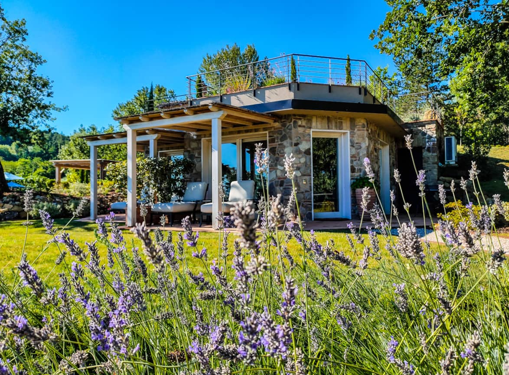
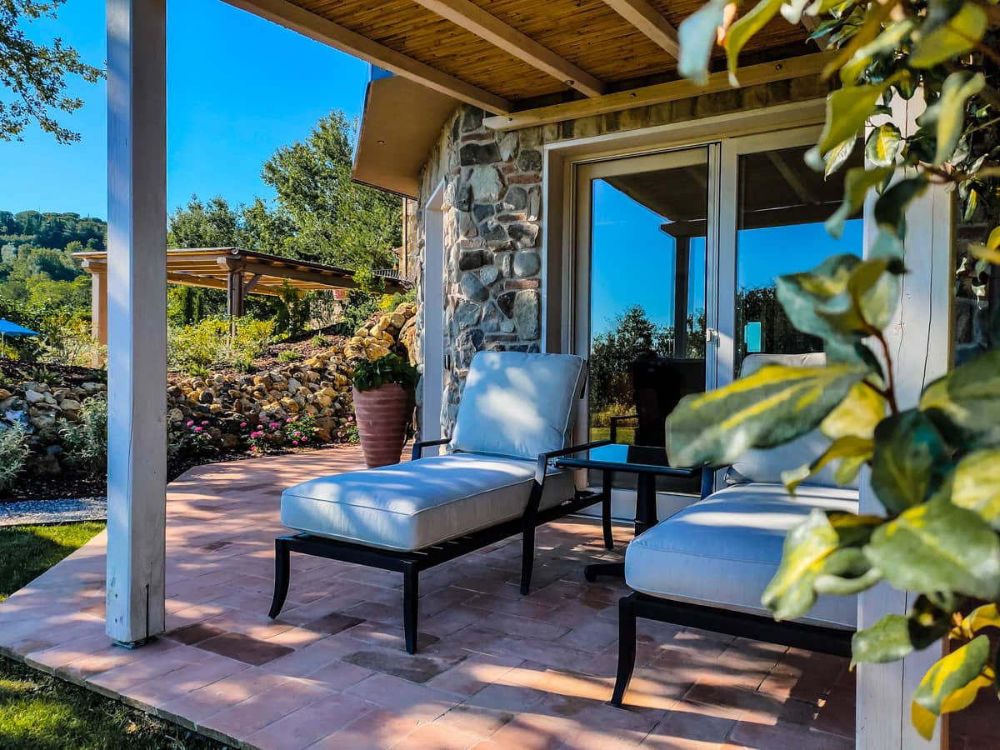
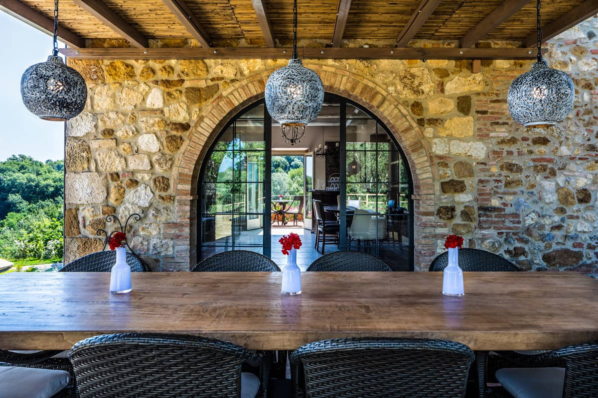
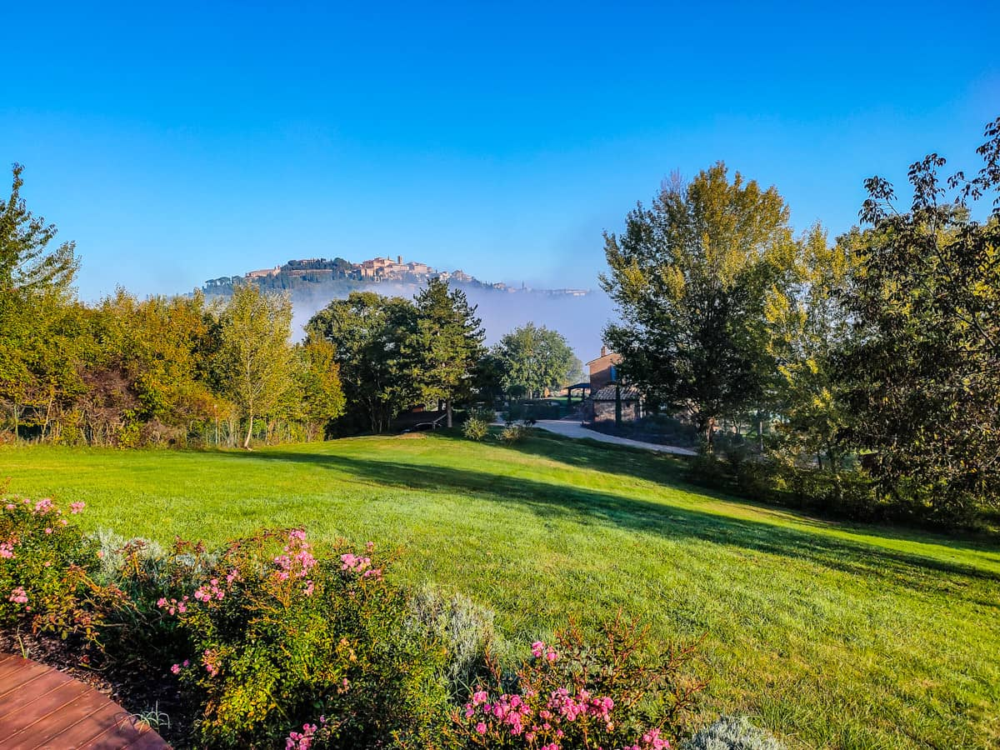
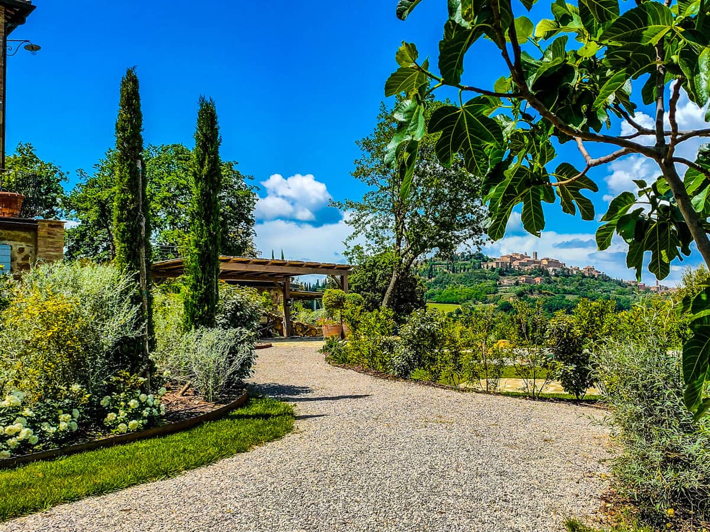
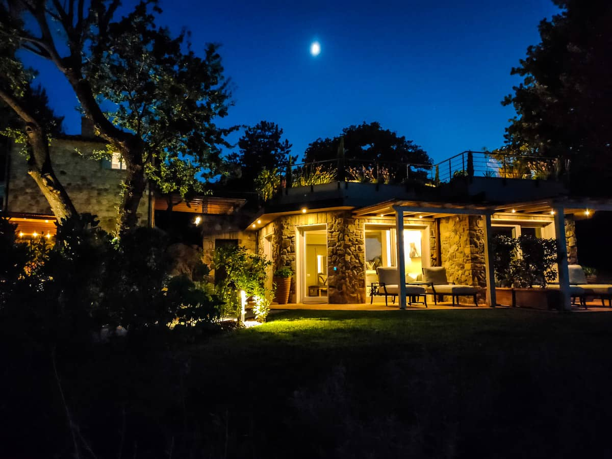

Natur und Umgebung
Italien ist ein Land, das reich an atemberaubender Natur und einer einzigartigen Umgebung ist. Die vielfältigen Landschaften des Landes reichen von den malerischen Weinbergen im Toscana bis hin zu den schneebedeckten Alpen. Die Amalfiküste begeistert mit ihren dramatischen Klippen und türkisblauen Meer, während der Comer See Ruhe und Entspannung bietet.
Italien ist auch bekannt für seine vielen Naturschutzgebiete, darunter der Nationalpark Gran Paradiso und die Lagune von Venedig. Diese Orte beherbergen eine Vielzahl seltener Pflanzen- und Tierarten und bieten Besuchern die Möglichkeit, die Schönheit der Natur zu erleben und zu schätzen.
Ob Sie auf der Suche nach Entspannung sind oder nach Abenteuer und Entdeckung, Italiens Natur und Umgebung bieten unendliche Möglichkeiten. Lassen Sie sich von den atemberaubenden Landschaften und dem reichen Kulturerbe Italiens verzaubern und entdecken Sie die Schönheit des Landes. Die Umgebung bietet unzählige Möglichkeiten für Outdoor-Aktivitäten wie Wandern, Radfahren und Angeln.
Wenn Sie die Kultur und Geschichte Italiens erkunden möchten, finden Sie in den zahlreichen Städten und Dörfern des Landes eine Fülle an historischen und kulturellen Sehenswürdigkeiten. Die antiken Ruinen Roms, die majestätischen Kunstwerke Florenz und die romantischen Kanäle Venedigs sind nur einige der vielen Schätze.
|  |  |
|---|---|
|  |  |
|  |  |